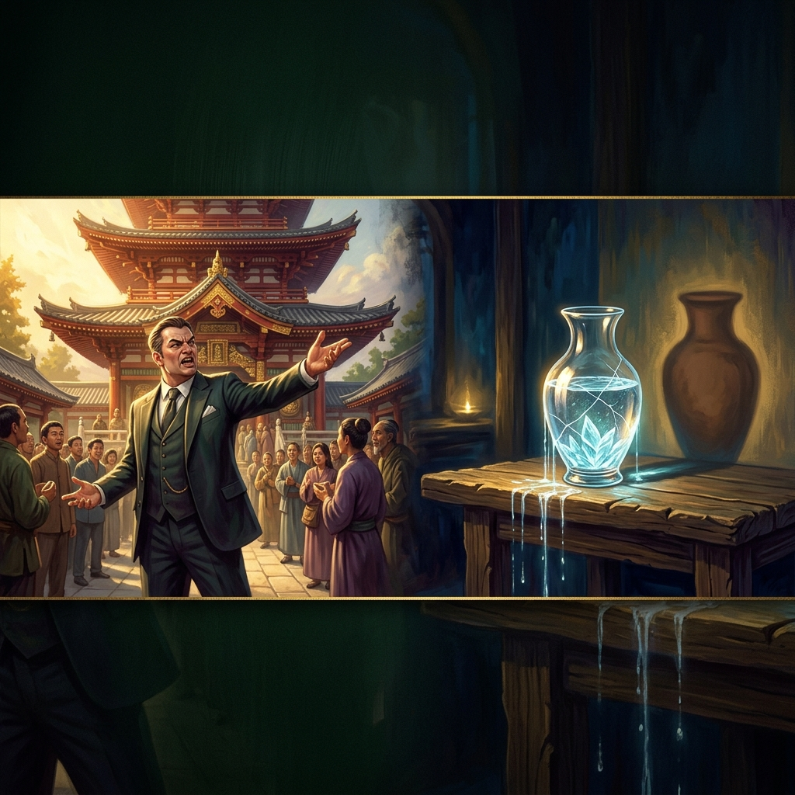
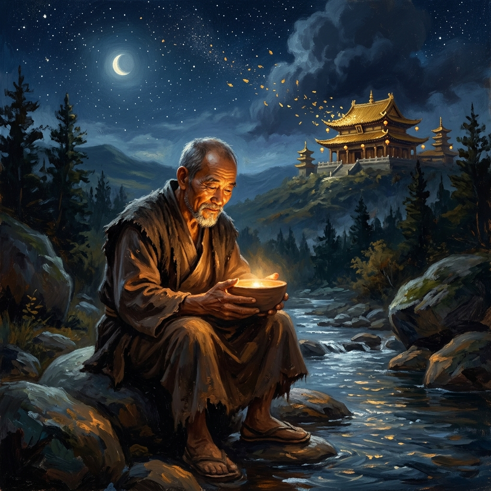
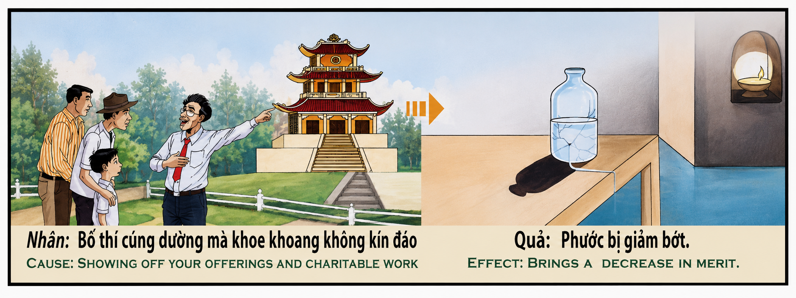

La Ostentación del Mérito The Ostentation of Merit L'Ostentazione del Merito 炫耀功德 التباهي بالاستحقاق Тщеславие заслуги Die Prachtsucht des Verdienstes L'Ostentation du Mérite 功徳の誇示 A Ostentação do Mérito Khoe khoang công đức
Quien realiza obras de caridad u ofrendas sagradas buscando la admiración del mundo o el aplauso de los hombres, resquebraja el recipiente espiritual de su propia virtud; pues el verdadero mérito florece en la humildad del silencio, mientras que la vanagloria hace gotear las bendiciones hasta dejar el alma vacía. Whoever performs charitable works or sacred offerings seeking the world's admiration or the applause of men cracks the spiritual vessel of their own virtue; for true merit flowers in the humility of silence, while boastfulness causes blessings to leak away until the soul is left empty. Chi compie opere di carità o sacre offerte cercando l'ammirazione del mondo o l'applauso degli uomini, incrina il recipiente spirituale della propria virtù; poiché il vero merito fiorisce nell'umiltà del silenzio, mentre la vanagloria fa gocciolare le benedizioni fino a lasciare l'anima vuota. 凡求世人赞叹或名利而行善供养者，皆在亲自震裂自身德行的精神法器；唯有默默无闻的谦逊方能孕育真功德，而虚荣傲慢终将使福报流失殆尽，使灵魂空匮。 من يعمل الخير أو يقدم القرابين المقدسة طلباً لإعجاب العالم أو تصفيق الناس، فإنه يشق الوعاء الروحي لفضيلته؛ فالاستحقاق الحقيقي يزهر في تواضع الصمت، بينما التباهي يسرّب البركات حتى تترك الروح فارغة. Тот, кто совершает дела милосердия или священные подношения в поисках мирского восхищения или людских аплодисментов, раскалывает духовный сосуд собственной добродетели; ибо истинная заслуга расцветает в смирении молчания, тогда как тщеславие заставляет благословения вытекать капля за каплей, пока душа не останется пустой. Wer Werke der Barmherzigkeit oder heilige Opfergaben bringt, um die Bewunderung der Welt oder den Beifall der Menschen zu suchen, zerbricht das spirituelle Gefäß seiner eigenen Tugend; denn wahres Verdienst blüht in der Demut des Schweigens, während Großtuerei die Segnungen tröpfeln lässt, bis die Seele leer zurückbleibt. Quiconque accomplit des œuvres de charité ou des offrandes sacrées en cherchant l'admiration du monde ou les applaudissements des hommes fissure le récipient spirituel de sa propre vertu ; car le vrai mérite fleurit dans l'humilité du silence, tandis que la vanité laisse fuir les bénédictions jusqu'à laisser l'âme vide. 世の称賛や人々の拍手を求めて慈善活動や神聖な供物を行う者は、自らの美徳という精神の容器にひびを入れる。真の功徳は沈黙の謙虚さの中で開花するが、自慢は祝福を漏れ出させ、ついには魂を空にしてしまう。 Quem realiza obras de caridade ou oferendas sagradas buscando a admiração do mundo ou o aplauso dos homens, racha o recipiente espiritual da sua própria virtude; pois o verdadeiro mérito floresce na humildade do silêncio, enquanto a vanagloria faz gotejar as bênçãos até deixar a alma vazia. Bố thí cúng dường mà khoe khoang không kín đáo thì phước bị giảm bớt; bởi vì công đức chân thật chỉ nảy nở trong sự khiêm nhường của lòng thanh tĩnh, còn sự phô trương sẽ làm rò rỉ mọi phước báu cho đến khi tâm hồn trở nên trống rỗng.
El relieve original del templo nos presenta un contraste aleccionador entre la vanagloria humana y la realidad metafísica: a la izquierda, bajo la luz del sol, un donante adinerado de traje elegante señala con altanería una majestuosa pagoda de techos rojos que ha financiado, jactándose de su contribución caritativa ante los aldeanos; a la derecha, la verdad espiritual se desvela mediante una vasija de cristal transparente sobre una mesa de madera, cuya agua limpia se filtra ininterrumpidamente a través de finas grietas, mientras su sombra proyecta la silueta de un cántaro vacío. La causa es hacer ofrendas o caridad con ostentación; el efecto es la disminución constante del mérito acumulado.
Esta ley kármica desenmascara las trampa más sutil del ego espiritual. La verdadera caridad no se mide por la suma física entregada ni por la magnificencia del edificio erigido, sino por la pureza y el desprendimiento del corazón que la ofrece. Cuando una dádiva se realiza con el deseo de edificar un pedestal personal o cosechar el aplauso del mundo, la frecuencia vibratoria del acto queda contaminada por el orgullo. El universo no responde al ruido de la autoalabanza, sino a la resonancia silenciosa del amor puro.
La primera dimensión de esta enseñanza es el recipiente de la virtud y la grieta del ego. El mérito acumulado por una buena acción es como agua cristalina guardada en una delicada vasija espiritual. Cuando la ostentación y el jactarse entran en el corazón, actúan como golpeteos agudos contra el cristal. En el momento en que una persona exige reconocimiento o presume de su generosidad, se abren finas fisuras en su recipiente de la virtud, alterando su capacidad de retener la luz divina.
La segunda dimensión explora la recompensa terrenal efímera frente a la gracia eterna. Tal como se ha enseñado sabiamente a través de las eras: «Que tu mano izquierda no sepa lo que hace tu mano derecha, para que tu caridad quede en secreto». Quien anuncia sus buenas obras recibe su paga completa en el plano físico mediante el elogio efímero de los hombres. Habiendo exigido y cobrado su tributo en la tierra, no queda interés espiritual alguno para ser acumulado en los planos superiores.
La tercera dimensión resalta la fuga invisible de las bendiciones acumuladas. La disminución del mérito rara vez es un desalojo instantáneo; es un goteo imperceptible pero incesante. Cada vez que el donante vuelve a relatar su hazaña caritativa con soberbia o exige un trato de reverencia especial, otra gota de virtud se derrama por las grietas. En momentos de crisis o necesidad espiritual, estas personas descubren con consternación que su tesoro interior está completamente seco a pesar de una vida de donaciones visibles.
La cuarta dimensión ilumina el santuario sagrado de la dádiva anónima. La forma más elevada de generosidad es la que se realiza en total secreto, donde solo el Creador atestigua el acto. En ese espacio silencioso, limpio de miradas ajenas o expectativas de gratitud, el recipiente de la virtud se sella con gracia indestructible. El bien realizado en secreto crea un pozo inagotable de luz que protege el alma a través del tiempo y abre de par en par las puertas del auténtico despertar espiritual.
The original relief of the temple presents us with a sobering contrast between human vanity and metaphysical reality: on the left, under the daylight, a wealthy benefactor in an elegant suit gestures proudly toward a majestic pagoda with crimson roofs he funded, boasting of his charitable contribution before villagers; on the right, the spiritual truth is unveiled through a transparent glass vessel resting on a wooden table, its clean water continuously dripping away through hairline cracks, while its shadow casts the silhouette of an empty urn. The cause is making offerings or charity with ostentation; the effect is the steady decrease of accumulated merit.
This karmic law unmasks the subtle traps of spiritual pride. True charity is not measured by the physical sum given nor by the magnificence of the building erected, but by the purity and selflessness of the heart that offers it. When a gift is given with the desire to build a personal pedestal or harvest worldly applause, the vibratory frequency of the act is contaminated by pride. The universe does not respond to the noise of self-praise, but to the silent resonance of pure love.
The first dimension of this teaching is the vessel of virtue and the intrusion of ego. The merit accumulated from a good deed is like crystal-clear water stored in a delicate spiritual container. When ostentation and bragging enter the heart, they act as sharp strikes against the glass. The moment a person demands recognition or boasts of their generosity, fine fissures open across their container of virtue, disrupting its ability to retain divine light.
The second dimension explores the fleeting earthly reward versus eternal grace. As has been wisely taught through the ages: "Let not your left hand know what your right hand is doing, so that your giving may be in secret." Whoever advertises their good works receives their full payment on the physical plane in the fleeting form of human praise. Having demanded and collected their payment on earth, no spiritual interest remains to be accumulated in higher realms.
The third dimension highlights the invisible leakage of accumulated blessings. The decrease of merit is rarely an instantaneous loss; it is an imperceptible yet incessant leak. Each time the donor re-tells their charitable feat with pride or expects special reverence, another drop of virtue seeps out through the cracks. In times of crisis or spiritual need, such individuals discover to their dismay that their inner treasury is completely dry despite a lifetime of visible donations.
The fourth dimension illuminates the sacred sanctuary of anonymous giving. The highest form of generosity is performed in total secrecy, where only the Creator witnesses the act. In that quiet space, untainted by public scrutiny or expectation of gratitude, the container of virtue is sealed with indestructible grace. A secret gift creates an unshakeable wellspring of light that protects the soul through time and opens wide the gates of genuine spiritual awakening.
Il rilievo originale del tempio ci presenta un contrasto educativo tra la vanagloria umana e la realtà metafisica: a sinistra, sotto la luce del sole, un ricco donatore in abito elegante indica con boria una maestosa pagoda dai tetti rossi che ha finanziato, vantandosi del suo contributo caritatevole davanti ai contadini; a destra, la verità spirituale si svela attraverso un vaso di vetro trasparente su un tavolo di legno, la cui acqua pulita gocciola ininterrottamente attraverso sottili crepe, mentre la sua ombra proietta la sagoma di un'anfora vuota. La causa è fare offerte o carità con ostentazione; l'effetto è la costante diminuzione del merito accumulato.
Questa legge karmica smaschera le trappole più sottili dell'orgoglio spirituale. La vera carità non si misura dalla somma fisica donata né dalla magnificenza dell'edificio eretto, ma dalla purezza e dal distacco del cuore che la offre. Quando un dono viene fatto con il desiderio di edificare un piedistallo personale o raccogliere l'applauso del mondo, la frequenza vibratoria dell'atto viene contaminata dall'orgoglio. L'universo non risponde al rumore dell'autolode, ma alla risonanza silenziosa dell'amore puro.
La prima dimensione di questo insegnamento è il recipiente della virtù e la crepa dell'ego. Il merito accumulato da una buona azione è come acqua cristallina custodita in un delicato vaso spirituale. Quando l'ostentazione e il vanto entrano nel cuore, agiscono come colpi acuti contro il vetro. Nel momento in cui una persona esige riconoscimento o si vanta della propria generosità, si aprono sottili fessure nel suo recipiente della virtù, compromettendo la sua capacità di trattenere la luce divina.
La seconda dimensione esplora la ricompensa terrena effimera di fronte alla grazia eterna. Come è stato saggiamente insegnato attraverso le ere: «Non sappia la tua sinistra ciò che fa la tua destra, affinché la tua carità resti nel segreto». Chi annuncia le proprie buone opere riceve il suo pagamento completo sul piano fisico attraverso l'elogio effimero degli uomini. Avendo preteso e riscosso il proprio tributo sulla terra, non rimane alcun interesse spirituale da accumulare nei piani superiori.
La terza dimensione evidenzia la fuga invisibile delle benedizioni accumulate. La diminuzione del merito raramente è uno svuotamento istantaneo; è uno gocciolio impercettibile ma incessante. Ogni volta che il donatore riracconta la sua impresa caritatevole con superbia o pretende un trattamento di speciale riverenza, un'altra goccia di virtù si versa attraverso le crepe. In momenti di crisi o necessità spirituale, queste persone scoprono con costernazione che il loro tesoro interiore è completamente asciutto nonostante una vita di donazioni visibili.
La quarta dimensione illumina il santuario sacro del dono anonimo. La forma più elevata di generosità è quella compiuta nel totale segreto, dove solo il Creatore è testimone dell'atto. In quello spazio silenzioso, pulito da sguardi altrui o aspettative di gratitudine, il recipiente della virtù si sigilla con una grazia indistruttibile. Il bene compiuto nel segreto crea un pozzo inesauribile di luce che protegge l'anima nel tempo e spalanca le porte del vero risveglio spirituale.
寺庙的原始浮雕为我们呈现了人性虚荣与形而上学现实之间的深刻对比：左边，在阳光下，一位身穿优雅西装的富有捐赠者傲慢地指着他资助的一座雄伟的红顶佛塔，在村民面前炫耀自己的慈善贡献；右边，精神真理由放置在木桌上的透明玻璃瓶揭示，瓶中的薪水透过微小的裂缝不断流失，而其影子却投射出一个空无一物的陶罐轮廓。因是布施供养而张扬炫耀；果是所积功德不断减少。
这一业力法则揭露了精神傲慢最隐蔽的陷阱。真正的慈善并不取决于所捐赠的物资数量，也不取决于所耸立建筑的宏伟程度，而取决于奉献之心的纯洁与无私。当一份供养带着建立个人声望或博取世人掌声的欲望时，该行为的振动频率就被自我所污染。宇宙并不回应自我夸耀的喧嚣，而是回应纯洁之爱的寂静共鸣。
这一教义的第一维度是德行法器与自我的裂痕。善行所积累的功德就像盛在精致精神容器中的晶莹清水。当炫耀和夸口进入内心时，它们就像是对玻璃容器的剧烈敲击。在一言一行要求认可或自夸慷慨的瞬间，德行容器上就会开裂出细微的缝隙，破坏其保留神圣光芒的能力。
第二维度探讨了短暂的尘世赏赐与永恒恩典的对比。正如古往今来明智教导的那样：“右手做善事，不要让左手知道，好让你的布施在隐蔽中。”凡宣扬自己善行的人，已在物质层面以世人赞美这一短暂形式收到了全部赏赐。既已在人间索取并收下了回报，便再无精神功德可积聚于高维界域。
第三维度强调了所积福报的无形流失。功德的减少很少是一瞬间的剥夺；而是一种肉眼难察却绵绵不绝的渗漏。每当捐赠者带着傲慢再次讲述自己的慈善壮举，或要求特殊的尊崇时，又一滴德行清水便从裂缝中流逝。在面临危机或精神求助的关头，这些人惊恐地发现，尽管一生布施无数，内心的宝库却已完全干涸。
第四维度照亮了匿名布施的神圣圣所。最高尚的慷慨形式是在完全隐秘中进行的，唯有造物主在见证这一善举。在那个不受外界目光或感恩期望污染的宁静空间里，德行容器被封印上了不可毁灭的恩典。隐秘中完成的善举创造了一个永不干涸的光明泉眼，跨越时光庇护着灵魂，并轰然打开真正精神觉醒的大门。
يقدم لنا النقش الأصلي للمعبد تباينًا بليغًا بين التباهي البشري والحقيقة الميتافيزيقية: على اليسار، وتحت ضوء الشمس، يشير متبرع غني يرتدي بدلة أنيقة بكبرياء إلى باجودا مهيبة ذات أسقف حمراء قام بتمويلها، متفاخرًا بمساهمته الخيرية أمام القرويين؛ وعلى اليمين، تنكشف الحقيقة الروحية من خلال وعاء زجاجي شفاف على طاولة خشبية، تسرّب منه المياه النظيفة باستمرار عبر شقوق دقيقة، بينما يلقي ظله صورة ظلية لوعاء فخاري فارغ. السبب هو تقديم القرابين أو العمل الخيري بتباهٍ؛ والنتيجة هي التناقص المستمر في الاستحقاق التراكمي.
يكشف هذا القانون الكرمي عن أفخاخ الكبرياء الروحي الأكثر دقة. لا يُقاس الخير الحقيقي بالمبلغ المادي المتبرع به ولا بعظمة البناء المقام، بل بنقاء وانسلاخ القلب الذي يقدمه. عندما تُقدم الهبة برغبة في بناء عرش شخصي أو جني تصفيق العالم، فإن التردد الاهتزازي للفعل يتلوث بالكبرياء. لا يستجيب الكون لضجيج التمجيد الذاتي، بل للرنين الصامت للحب الخالص.
البعد الأول لهذا التعليم هو وعاء الفضيلة وشق الأنا. الاستحقاق المتراكم من عمل صالح هو مثل مياه بلورية صافية محفوظة في وعاء روحي رقيق. عندما يدخل التباهي والتفاخر إلى القلب، فإنهما يعملان كضربات حادة على الزجاج. في اللحظة التي يطالب فيها الشخص بالاعتراف أو يتفاخر بسخائه، تفتح شقوق دقيقة في وعاء فضيلته، مما يعطل قدرته على الاحتفاظ بالنور الإلهي.
البعد الثاني يستكشف المكافأة الدنيوية العابرة مقابل النعمة الأبدية. كما عُلّم بالحكمة عبر العصور: «لا تعلم شمالك ما تفعل يمينك، لكي تكون صدقتك في الخفاء». من يعلن عن أعماله الصالحة يتلقى أجره كاملاً على المستوى المادي في الشكل العابر للثناء البشري. وبعد أن طالب بتبجيله على الأرض واستوفاه، لا يبقى أي رصيد روحي ليتراكم في العوالم العليا.
البعد الثالث يسلط الضوء على التسرب غير المرئي للبركات المتراكمة. نادراً ما يكون نقصان الاستحقاق خسارة فورية؛ بل هو تسرب غير محسوس ولكنه لا يتوقف. في كل مرة يعيد المتبرع سرد إنجازه الخيري بكبرياء أو يتوقع معاملة خاصة من التبجيل، تتسرب قطرة أخرى من الفضيلة عبر الشقوق. في أوقات الأزمات أو الحاجة الروحية، يكتشف هؤلاء الأشخاص بفزع أن كنزهم الداخلي جاف تماماً رغم حياة مليئة بالتبرعات الظاهرة.
البعد الرابع يضيء الملاذ المقدس للعطاء الخفي. أسمى أشكال السخاء هو ما يُمارس في سرية تامة، حيث يكون الخالق وحده شاهداً على الفعل. في ذلك الفضاء الصامت، الخالي من نظرات الآخرين أو توقعات الامتنان، يُختم وعاء الفضيلة بنعمة لا تقبل التدمير. الخير المعمول في الخفاء يخلق نبعاً لا ينضب من النور يحمي الروح عبر الزمن ويفتح أبواب الصحوة الروحية الحقيقية على وسعها.
Оригинальный рельеф храма представляет нам поучительный контраст между человеческим тщеславием и метафизической реальностью: слева, под солнечным светом, богатый благотворитель в элегантном костюме надменно указывает на величественную пагоду с красными крышами, которую он профинансировал, хвастаясь своим благотворительным вкладом перед деревенскими жителями; справа духовная истина раскрывается через прозрачный стеклянный сосуд на деревянном столе, чистая вода из которого непрерывно вытекает через тонкие трещины, в то время как его тень отбрасывает силуэт пустого кувшина. Причина — совершение подношений или милосердия с показухой; следствие — постоянное уменьшение накопленной заслуги.
Этот кармический закон разоблачает самые тонкие ловушки духовной гордыни. Истинное милосердие измеряется не физической суммой пожертвования и не великолепием воздвигнутого здания, а чистотой и бескорыстием дарующего сердца. Когда дар приносится с желанием воздвигнуть личный пьедестал или собрать аплодисменты мира, вибрационная частота акта оскверняется эгоизмом. Вселенная отвечает не на шум самовосхваления, а на тихое резонирование чистой любви.
Первое измерение этого учения — сосуд добродетели и трещина эго. Заслуга, накопленная добрым делом, подобна кристально чистой воде, хранящейся в хрупком духовном сосуде. Когда показное тщеславие и хвастовство входят в сердце, они действуют как резкие удары по стеклу. В тот момент, когда человек требует признания или хвастается своей щедростью, в его сосуде добродетели открываются тонкие трещины, нарушающие его способность удерживать божественный свет.
Второе измерение исследует мимолетную земную награду в сравнении с вечной благодатью. Как мудро училось во все времена: «Пусть левая рука твоя не знает, что делает правая, чтобы милостыня твоя была втайне». Каждый, кто рекламирует свои добрые дела, получает свою полную плату на физическом плане в мимолетной форме человеческой похвалы. Потребовав и собрав свою дань на земле, он не оставляет духовных процентов для накопления в высших сферах.
Третье измерение подчеркивает невидимую утечку накопленных благословений. Уменьшение заслуги редко бывает мгновенной утратой; это незаметная, но непрерывная утечка. Каждый раз, когда благотворитель с гордостью пересказывает свой подвиг или требует особого почтения, еще одна капля добродетели просачивается через трещины. В моменты кризиса или духовной нужды эти люди с ужасом обнаруживают, что их внутреннее сокровище совершенно сухо, несмотря на жизнь, полную видимых пожертвований.
Четвертое измерение освещает священное святилище анонимного дарения. Высшая форма щедрости — это та, которая совершается в абсолютной тайне, где только Творец является свидетелем акта. В этом тихом пространстве, не оскверненном чужими взглядами или ожиданиями благодарности, сосуд добродетели запечатывается нерушимой благодатью. Добро, совершенное втайне, создает неиссякаемый источник света, который защищает душу сквозь время и широко открывает врата подлинного духовного пробуждения.
Das ursprüngliche Relief des Tempels zeigt uns einen lehrreichen Kontrast zwischen menschlicher Eitelkeit und metaphysischer Realität: Links zeigt ein reicher Wohltäter im eleganten Anzug unter dem Tageslicht stolz auf eine von ihm finanzierte majestätische Pagode mit rotem Dach und prahlt vor den Dorfbewohnern mit seiner wohltätigen Spende; rechts offenbart sich die spirituelle Wahrheit durch ein transparentes Glasgefäß auf einem Holztisch, dessen reines Wasser unaufhörlich durch feine Risse heraustropft, während sein Schatten die Silhouette eines leeren Tonkrugs wirft. Die Ursache ist das Darbringen von Opfergaben oder Wohltätigkeit mit Prachtsucht; die Wirkung ist die stetige Abnahme des angesammelten Verdienstes.
Dieses karmische Gesetz entlarvt die subtilsten Fallen des spirituellen Stolzes. Wahre Barmherzigkeit bemisst sich weder nach der physischen Summe des Gegebenen noch nach der Pracht des errichteten Gebäudes, sondern nach der Reinheit und Uneigennützigkeit des Herzens, das es darbringt. Wenn eine Gabe mit dem Wunsch dargebracht wird, ein persönliches Podest zu errichten oder den Beifall der Welt zu ernten, wird die Schwingungsfrequenz der Tat durch Stolz verunreinigt. Das Universum antwortet nicht auf den Lärm des Selbstlobs, sondern auf die stille Resonanz der reinen Liebe.
Die erste Dimension dieser Lehre ist das Gefäß der Tugend und der Riss des Egos. Das durch eine gute Tat angesammelte Verdienst ist wie kristallklares Wasser, das in einem zarten spirituellen Gefäß aufbewahrt wird. Wenn Ostentation und Prahlen in das Herz einziehen, wirken sie wie scharfe Schläge gegen das Glas. In dem Moment, in dem ein Mensch Anerkennung verlangt oder mit seiner Großzügigkeit prahlt, öffnen sich feine Risse in seinem Tugendgefäß, die seine Fähigkeit beeinträchtigen, göttliches Licht zu bewahren.
Die zweite Dimension erforscht den flüchtigen irdischen Lohn im Vergleich zur ewigen Gnade. Wie im Laufe der Jahrhunderte weise gelehrt wurde: „Lass deine linke Hand nicht wissen, was deine rechte tut, damit deine Wohltätigkeit im Verborgenen bleibe.“ Wer seine guten Werke anpreist, erhält seinen vollen Lohn auf der physischen Ebene in der flüchtigen Form menschlichen Lobes. Da er seinen Tribut auf Erden verlangt und einkassiert hat, bleibt kein spiritueller Zins mehr übrig, der in höheren Sphären angesammelt werden könnte.
Die dritte Dimension hebt das unsichtbare Entweichen angesammelter Segnungen hervor. Die Abnahme des Verdienstes ist selten ein sofortiger Verlust; es ist ein unmerkliches, aber unaufhörliches Tröpfeln. Jedes Mal, wenn der Wohltäter seine wohlfeile Tat mit Stolz neu erzählt oder eine besondere Ehrerbietung erwartet, sickert ein weiterer Tropfen Tugend durch die Risse. In Zeiten der Krise oder spirituellen Not entdecken diese Menschen mit Bestürzung, dass ihr innerer Schatz trotz eines Lebens voller sichtbarer Spenden völlig ausgetrocknet ist.
Die vierte Dimension beleuchtet das heilige Heiligtum des anonymen Gebens. Die höchste Form der Großzügigkeit ist diejenige, die in völliger Verschwiegenheit ausgeübt wird, wo nur der Schöpfer Beuge der Tat ist. In diesem stillen Raum, unbefleckt von fremden Blicken oder Erwartungen der Dankbarkeit, wird das Tugendgefäß mit unzerstörbarer Gnade versiegelt. Das im Verborgenen getane Gute schafft einen unerschöpflichen Quell des Lichts, der die Seele durch die Zeit schützt und die Tore wahrhaftigen spirituellen Erwachens weit öffnet.
Le relief original du temple nous présente un contraste saisissant entre la vanité humaine et la réalité métaphysique : à gauche, sous la lumière du jour, un riche donateur en costume élégant pointe avec arrogance une majestueuse pagode aux toits pourpres qu'il a financée, se vantant de sa contribution charitable devant les villageois ; à droite, la vérité spirituelle se dévoile à travers un vase en verre transparent sur une table en bois, dont l'eau claire s'écoule ininterrompument par de fines fissures, tandis que son ombre projette la silhouette d'une jarre vide. La cause est de faire des offrandes ou de la charité avec ostentation ; l'effet est la diminution constante du mérite accumulé.
Cette loi karmique démasque les pièges les plus subtils de l'orgueil spirituel. La vraie charité ne se mesure pas à la somme physique donnée ni à la magnificence de l'édifice élevé, mais à la pureté et au détachement du cœur qui l'offre. Lorsqu'un don est fait avec le désir d'ériger un piédestal personnel ou de récolter les applaudissements du monde, la fréquence vibratoire de l'acte est contaminée par l'orgueil. L'univers ne répond pas au bruit de l'auto-éloge, mais à la résonance silencieuse de l'amour pur.
La première dimension de cet enseignement est le récipient de la vertu et la fissure de l'ego. Le mérite accumulé par une bonne action est comme une eau cristalline conservée dans un délicat vase spirituel. Lorsque l'ostentation et la vanité entrent dans le cœur, elles agissent comme des coups aigus contre le verre. Au moment où une personne exige de la reconnaissance ou se vante de sa générosité, de fines fissures s'ouvrent dans son récipient de vertu, altérant sa capacité à retenir la lumière divine.
La deuxième dimension explore la récompense terrestre éphémère face à la grâce éternelle. Comme cela a été enseigné avec sagesse à travers les âges : « Que ta main gauche ne sache pas ce que fait ta main droite, afin que ton aumône se fasse en secret ». Quiconque proclame ses bonnes œuvres reçoit son plein paiement sur le plan physique sous la forme éphémère de l'éloge humain. Ayant exigé et perçu son tribut sur terre, aucun intérêt spirituel ne reste à accumuler dans les plans supérieurs.
La troisième dimension souligne la fuite invisible des bénédictions accumulées. La diminution du mérite est rarement une perte instantanée ; c'est un égouttement imperceptible mais incessant. Chaque fois que le donateur raconte à nouveau son exploit charitable avec orgueil ou exige une déférence particulière, une autre goutte de vertu s'échappe par les fissures. En temps de crise ou de besoin spirituel, ces personnes découvrent avec consternation que leur trésor intérieur est totalement sec malgré une vie de dons visibles.
La quatrième dimension illumine le sanctuaire sacré du don anonyme. La forme la plus élevée de générosité est celle accomplie dans le secret le plus total, où seul le Créateur témoigne de l'acte. Dans cet espace silencieux, purifié des regards extérieurs ou des attentes de gratitude, le récipient de vertu se scelle d'une grâce indestructible. Le bien accompli en secret crée un puits inépuisable de lumière qui protège l'âme à travers le temps et ouvre grand les portes du véritable éveil spirituel.
寺院のオリジナルのレリーフは、人間の虚栄心と形而上学的な現実との間の教訓的な対比を私たちに見せてくれます。左側では、太陽の光の下、エレガントなスーツを着た裕福な寄付者が、自分が資金提供した赤い屋根の雄大な仏塔を傲慢に指差し、村人たちの前で自分の慈善貢献を誇っています。右側では、木製テーブルの上に置かれた透明なガラス瓶を通して精神的な真実が明かされています。瓶の中のきれいな水は細いひび割れから絶え間なく漏れ出し、その影は空の壺のシルエットを映し出しています。原因は誇示して布施や慈善を行うことであり、結果は蓄積された功德の絶え間ない減少です。
このカルマの法則は、精神的な傲慢さの最も微妙な罠を暴きます。真の慈善は、与えられた物理的な金額や建てられた建造物の壮大さによって測られるのではなく、それを捧げる心の純粋さと無私さによって測られます。個人を称える台座を築いたり、世の拍手を収穫したいという欲望を持って贈り物がなされるとき、その行為の振動周波数はエゴによって汚染されます。宇宙は自己自慢の騒音に応答するのではなく、純粋な愛の静かな共鳴に応答します。
この教えの第一の次元は、美徳の容器とエゴのひび割れです。善行によって蓄積された功徳は、繊細な精神の容器に蓄えられた水晶のように澄んだ水のようなものです。誇示や自慢が心に入り込むと、それらはガラスに対する鋭い打撃として作用します。人が承認を要求したり自分の寛大さを誇ったりした瞬間、美徳の容器全体に細い亀裂が入り、神聖な光を保持する能力が損なわれます。
第二の次元は、永遠の恩寵に対する一時的な世俗の報酬を探求します。古くから賢明に教えられてきたように、「右の手のしていることを左の手に見せるな。それは、あなたの施しが隠れたものとなるためである」。自らの善行を宣伝する者は、人間の称賛という儚い形で、物質次元における全報酬を受け取っています。地上で支払いを要求し回収したため、より高い領域に蓄積されるべき精神的な利息は何も残りません。
第三の次元は、蓄積された祝福の無意識の漏れを強調しています。功徳の減少が瞬間的な失われますであることは滅多にありません。それは知覚できないが絶え間ない漏れです。寄付者が高慢をもって自分の慈善の偉業を語り直したり、特別な敬意を要求したりするたびに、ひび割れから美徳のもう一滴が染み出します。危機や精神的な困窮の時、これらの人々は、一生可視的な寄付を行ってきたにもかかわらず、自分の内なる宝庫が完全に干上がっていることに驚愕します。
第四の次元は、匿名での寄付の神聖な聖域を照らします。最高の形の寛大さは完全な秘密の中で行われるものであり、そこでは創造主だけが行為を目撃します。他人の視線や感謝の期待によって汚されていないその静かな空間で、美徳の容器は破壊不可能な恩寵によって封印されます。秘密のうちに行われた善は、時を超えて魂を保護し、真の精神的覚醒の扉を大きく開く、揺るぎない光の泉を生み出します。
O relevo original do templo apresenta-nos um contraste instrutivo entre a vanagloria humana e a realidade metafísica: à esquerda, sob a luz do dia, um doador abastado em trajes elegantes aponta com altivez para uma majestosa pagoda de telhados vermelhos que financiou, jactando-se da sua contribuição caridosa diante dos aldeões; à direita, a verdade espiritual desvela-se através de um vaso de vidro transparente sobre uma mesa de madeira, cuja água limpa se filtra ininterruptamente através de finas rachaduras, enquanto a sua sombra projeta a silhueta de um jarro vazio. A causa é fazer oferendas ou caridade com ostentação; o efeito é a diminuição constante do mérito acumulado.
Esta lei cármica desmascara as armadilhas mais sutis do orgulho espiritual. A verdadeira caridade não se mede pela soma física entregue nem pela magnificência do edifício erguido, mas pela pureza e desprendimento do coração que a oferece. Quando uma dádiva é realizada com o desejo de edificar um pedestal pessoal ou colher o aplauso do mundo, a frequência vibratória do ato fica contaminada pelo orgulho. O universo não responde ao ruído da autoaltação, mas à ressonância silenciosa do amor puro.
A primeira dimensão deste ensinamento é o recipiente da virtude e a rachadura do ego. O mérito acumulado por uma boa ação é como água cristalina guardada num delicado vaso espiritual. Quando a ostentação e o jacto entram no coração, agem como golpes agudos contra o vidro. No momento em que uma pessoa exige reconhecimento ou se jacta da sua generosidade, abrem-se finas fissuras no seu recipiente da virtude, comprometendo a sua capacidade de reter a luz divina.
A segunda dimensão explora a recompensa terrena efêmera diante da graça eterna. Como foi sabiamente ensinado ao longo das eras: «Que a tua mão esquerda não saiba o que faz a tua mão direita, para que a tua caridade fique em segredo». Quem anuncia as suas boas obras recebe o seu pagamento completo no plano físico através do elogio efêmero dos homens. Tendo exigido e cobrado o seu tributo na terra, não resta qualquer interesse espiritual para ser acumulado nos planos superiores.
A terceira dimensão realça a fuga invisível das bênçãos acumuladas. A diminuição do mérito raramente é um esvaziamento instantâneo; é um gotejamento imperceptível mas incessante. Cada vez que o doador volta a relatar a sua façanha caridosa com soberba ou exige um tratamento de especial reverência, outra gota de virtude derrama-se pelas rachaduras. Em momentos de crise ou necessidade espiritual, estas pessoas descobrem com consternação que o seu tesouro interior está completamente seco apesar de uma vida de doações visíveis.
A quarta dimensão ilumina o santuário sagrado da dádiva anónima. A forma mais elevada de generosidade é a que se realiza em total segredo, onde apenas o Criador é testemunha do ato. Nesse espaço silencioso, limpo de olhares alheios ou expectativas de gratidão, o recipiente da virtude sela-se com uma graça indestrutível. O bem realizado em segredo cria um poço inesgotável de luz que protege a alma através do tempo e abre de par em par as portas do autêntico despertar espiritual.
Bức phù điêu nguyên bản của ngôi chùa trình bày một sự tương phản sâu sắc giữa lòng phô trương của con người và thực tại siêu hình: bên trái, dưới ánh sáng mặt trời, một người cúng dường giàu có bận âu phục sang trọng指 tay đầy kiêu hãnh về phía ngôi bảo tháp mái đỏ nguy nga mà ông ta tài trợ, khoe khoang về sự đóng góp từ thiện của mình trước dân làng; bên phải, sự thật tâm linh được hé lộ qua một chiếc bình thủy tinh trong suốt đặt trên bàn gỗ, nước sạch trong bình rò rỉ liên tục qua những vết nứt nhỏ, trong khi bóng của nó chiếu xuống hình ảnh một chiếc hũ trống rỗng. Nhân là bố thí cúng dường mà khoe khoang không kín đáo; quả là phước báu tích lũy bị giảm bớt và cạn kiệt dần.
Quy luật nghiệp báo này vạch trần cạm bẫy tinh vi nhất của sự tự mãn tâm linh. Từ thiện chân thật không đo bằng số tiền vật chất trao đi hay sự tráng lệ của ngôi chùa được dựng lên, mà bằng sự thanh tịnh và buông bỏ của tâm từ bi. Khi một món quà được trao đi với mong muốn xây dựng bệ đài cá nhân hoặc thu hoạch sự tán dương của thế gian, tần số rung động của hành động đó đã bị ô nhiễm bởi cái tôi. Vũ trụ không đáp lại tiếng ồn ào của sự tự khen, mà đáp lại sự vang vọng thầm lặng của tình yêu thuần khiết.
Khía cạnh thứ nhất của lời dạy này là bình chứa đức hạnh và vết nứt của cái tôi. Phước báu tích lũy từ một việc thiện giống như nước tinh khiết chứa trong một bình chứa tâm linh mỏng manh. Khi sự phô trương và khoe khoang xâm nhập vào tâm, chúng hoạt động như những đòn đánh sắc nhọn vào thủy tinh. Ngay khoảnh khắc một người đòi hỏi sự công nhận hoặc tự hào về sự rộng lượng của mình, những vết nứt nhỏ xuất hiện trên bình chứa đức hạnh, làm suy giảm khả năng giữ lại ánh sáng thiêng liêng.
Khía cạnh thứ hai khám phá phần thưởng thế gian ngắn ngủi so với ân hiển vĩnh hằng. Như đã được dạy một cách sâu sắc qua các thời đại: "Khi con bố thí, đừng để tay trái biết việc tay phải làm, để sự bố thí của con được kín đáo". Kẻ nào quảng bá việc thiện của mình sẽ nhận đủ phần thưởng trên cõi trần gian dưới hình thức lời khen ngợi phù du của con người. Khi đã đòi hỏi và thu về phần thưởng ở trần gian, không còn công đức tâm linh nào được tích lũy ở các cõi cao hơn.
Khía cạnh thứ ba làm nổi bật sự rò rỉ vô hình của phước báu tích lũy. Sự giảm bớt phước báu hiếm khi là một sự mất mát tức thời; đó là một sự rò rỉ không thể nhận thấy nhưng liên tục. Mỗi lần người cúng dường kể lại chiến công từ thiện của mình với lòng kiêu ngạo hoặc đòi hỏi sự kính trọng đặc biệt, một giọt đức hạnh khác lại chảy ra qua các vết nứt. Trong những lúc khủng hoảng hoặc cần đến phước báu, những người này bàng hoàng nhận ra rằng kho tàng bên trong của họ đã hoàn toàn cạn kiệt dù cả đời cúng dường hiển hách.
Khía cạnh thứ tư soi sáng thánh địa linh thiêng của sự cúng dường thầm lặng. Hình thức rộng lượng cao nhất là hình thức được thực hiện trong sự bảo mật tuyệt đối, nơi chỉ có Đấng Tạo Hóa chứng giám. Trong khoảng không gian yên tĩnh đó, không bị vấy bẩn bởi sự dòm ngó của công chúng hay kỳ vọng về sự biết ơn, bình chứa đức hạnh được phong ấn bằng ân hiển bất tử. Việc thiện làm trong kín đáo tạo ra một nguồn ánh sáng bất tận bảo vệ linh hồn qua thời gian và mở rộng cánh cửa của sự thức tỉnh tâm linh chân thật.

La Vasija de la Vanagloria
The Jar of Boastfulness
Il Vaso della Vanagloria
虚荣之瓶
وعاء التباهي
Сосуд тщеславия
Das Gefäß der Prachtsucht
La Jarre de la Vanité
虚栄の瓶
O Vaso da Vanagloria
Bình Nước Của Sự Phô Trương
En la próspera provincia de Hạc Thành, vivió Khánh, un acaudalado comerciante que había acumulado enormes riquezas en el comercio de madera y seda. Deseoso de asegurar un legado inmortal y garantizarse un lugar elevado en los cielos, Khánh encargó la construcción de una suntuosa pagoda sobre la cima de una colina. El templo contaba con cinco niveles de tejados de terracota roja, columnas doradas y escalinatas de mármol. En la entrada principal, Khánh hizo colocar una enorme placa de bronce con su propio nombre grabado en letras de oro, y contrató a pregoneros para que relatasen su inmensa generosidad a todo transeúnte que cruzase el portal.
En la misma provincia vivía Thuận, un anciano picapedrero de complexión frágil y manos curtidas por el trabajo. Thuận no poseía nada más que su cincel, su martillo y una escudilla de arcilla sin adorno alguno. Cada noche, tras concluir su ardua jornada, Thuận recorría en silencio y en la penumbra los empinados senderos de montaña, reparando los escalones de piedra rotos y colocando lamparillas de aceite en las cuevas oscuras para que los peregrinos no tropezaran en la noche. Thuận jamás habló de su labor a nadie, ni dejó jamás una marca o inicial de su nombre sobre las piedras.
Khánh ofrecía banquetes suntuosos para dignatarios y monjes dentro de su pagoda, exclamando con orgullo: «¡Miren este santuario! Mi fortuna ha construido un palacio de mérito que me garantiza mil años de favor divino». Sin embargo, esa misma noche, en la quietud de su aposento, Khánh tuvo una extraña visión. Ante él apareció una vasija de cristal transparente llena de un agua cristalina que irradiaba un resplandor dorado. Pero mientras Khánh sonreía con vanidad, un chasquido agudo resonó en la habitación. Una fina grieta se abrió en el cristal, y un hilo de agua comenzó a gotear sobre la mesa. Cada vez que Khánh presumía en el mercado o señalaba su placa de bronce, se oía un nuevo chasquido y el nivel de agua dentro del recipiente descendía.
Pasaron los años, y una severa sequía y hambruna azotaron la región. Los campos se secaron y la penuria afligió a la gente. Khánh, buscando consuelo y amparo en su inversión espiritual, acudió a su pagoda a orar. Pero al cerrar los ojos, vio con horror que su vasija de cristal estaba completamente rota y vacía, y que su sombra proyectaba la silueta de un cántaro seco. Afectado por una repentina fiebre y lleno de angustia, Khánh comprendió que todas sus donaciones públicas se habían filtrado y perdido a través de las grietas de su vanagloria.
Desesperado, Khánh caminó hacia el sendero de la montaña, donde encontró al anciano picapedrero Thuận sentado en paz bajo la luz de la luna, compartiendo su último puñado de arroz con un niño huérfano. Junto a Thuận, Khánh contempló en visión una sencilla escudilla de arcilla que manaba un manantial inagotable de agua dorada y pura, difundiendo una serenidad tan profunda que sanaba el aire. Cayendo de rodillas en el polvo, Khánh lloró amargas lágrimas de arrepentimiento: «¡Levanté un templo de oro para que los hombres me alabaran, pero mi alma está en la miseria! Enséñame a sellar mi recipiente». Thuận sonrió con compasión, limpió las lágrimas del comerciante y murmuró con suavidad: «Cuando la mano que da se oculta en el silencio, el corazón se convierte en un océano infinito. Borra tu nombre del bronce, da sin esperar nada a cambio, y tu copa vacía se llenará de vida eterna».
In the prosperous trading province of Hạc Thành, lived Khánh, a wealthy merchant who had accumulated vast riches in timber and silk. Desiring to secure an immortal legacy and ensure a high place in the heavens, Khánh commissioned the construction of a sumptuous pagoda upon a hilltop. The temple featured five tiers of red terracotta roofs, gilded pillars, and marble staircases. At the main entrance, Khánh had a massive bronze plaque erected with his own name engraved in gold letters, and he hired heralds to recount his immense generosity to every traveler passing through the gates.
In the same province lived Thuận, an elderly stonecutter of frail build and hands weathered by hard labor. Thuận owned nothing beyond his chisel, hammer, and an unadorned clay bowl. Every night, after completing his arduous workday, Thuận quietly walked the steep mountain paths in the dark, repairing broken stone steps and placing small oil lamps in dark caverns so pilgrims would not stumble in the night. Thuận never spoke of his work to anyone, nor did he ever leave a mark or initial of his name upon the stones.
Khánh hosted lavish banquets for dignitaries and monks inside his pagoda, exclaiming with pride: "Look upon this sanctuary! My fortune has built a palace of merit that guarantees me a thousand years of divine favor." Yet that very night, in the quiet of his bedchamber, Khánh experienced a strange vision. Before him appeared a clear glass vessel filled with crystal-clear water radiating a golden glow. But as Khánh smiled with vanity, a sharp crack resounded in the room. A fine fissure opened across the glass, and a trickle of water began to leak onto the table. Every time Khánh boasted in the market or pointed to his bronze plaque, another crack sounded, and the water level inside the container dropped.
Years passed, and a severe drought and famine struck the region. Fields withered and hardship afflicted the people. Khánh, seeking comfort and shelter in his spiritual investment, went to his pagoda to pray. But when he closed his eyes, he saw with horror that his glass vessel was completely shattered and empty, and its shadow cast the silhouette of a dry urn. Stricken by a sudden fever and full of anguish, Khánh understood that all his public donations had leaked away and been lost through the cracks of his vanity.
Desperate, Khánh stumbled toward the mountain path, where he found the old stonecutter Thuận sitting peacefully under the moonlight, sharing his last handful of rice with an orphaned child. Beside Thuận, Khánh beheld in vision a simple clay bowl overflowing with an endless spring of pure golden water, diffusing a serenity so profound that it healed the surrounding air. Falling to his knees in the dust, Khánh wept bitter tears of repentance: "I built a temple of gold for men to praise me, yet my soul is destitute! Teach me how to seal my vessel." Thuận smiled with compassion, wiped the merchant's tears, and whispered softly: "When the hand that gives is hidden in silence, the heart becomes an infinite ocean. Erase your name from the bronze, give without expecting anything in return, and your empty cup shall be filled with eternal life."
Nella prospera provincia commerciale di Hạc Thành viveva Khánh, un ricco mercante che aveva accumulato enormi ricchezze nel commercio di legname e seta. Desideroso di assicurarsi un'eredità immortale e garantirsi un posto elevato nei cieli, Khánh commissionò la costruzione di una suntuosa pagoda sulla cima di una collina. Il tempio vantava cinque livelli di tetti in terracotta rossa, colonne dorate e scalinate di marmo. All'ingresso principale, Khánh fece collocare un'enorme targa di bronzo con il suo nome inciso a lettere d'oro e ingaggiò banditori affinché raccontassero la sua immensa generosità a ogni viandante che varcava il portale.
Nella stessa provincia viveva Thuận, un anziano tagliapietre di costituzione fragile e mani indurite dal duro lavoro. Thuận non possedeva altro che il suo scalpello, il martello e una ciotola di argilla priva di qualsiasi ornamento. Ogni notte, dopo aver concluso la sua faticosa giornata, Thuận percorreva in silenzio e nell'oscurità i ripidi sentieri di montagna, riparando i gradini di pietra rotti e posizionando piccole lampade a olio nelle caverne buie affinché i pellegrini non inciampassero nella notte. Thuận non parlò mai del suo lavoro a nessuno, né lasciò mai un segno o un'iniziale del suo nome sulle pietre.
Khánh offriva sontuosi banchetti per dignitari e monaci all'interno della sua pagoda, esclamando con orgoglio: «Guardate questo santuario! La mia fortuna ha costruito un palazzo di merito che mi garantisce mille anni di favore divino». Tuttavia, quella notte stessa, nella quiete della sua stanza, Khánh ebbe una strana visione. Davanti a lui apparve un vaso di vetro trasparente pieno di un'acqua cristallina che irradiava un bagliore dorato. Ma mentre Khánh sorrideva con vanità, un nitido chasquido risuonò nella stanza. Una sottile crepa si aprì nel vetro e un filo d'acqua cominciò a gocciolare sul tavolo. Ogni volta che Khánh si vantava al mercato o indicava la sua targa di bronzo, si udiva un nuovo scricchiolio e il livello dell'acqua nel recipiente scendeva.
Passarono gli anni e una severa siccità e carestia colpirono la regione. I campi si seccarono e la miseria afflisse la popolazione. Khánh, cercando conforto e riparo nel suo investimento spirituale, si recò nella sua pagoda per pregare. Ma chiudendo gli occhi, vide con orrore che il suo vaso di vetro era completamente rotto e vuoto, e che la sua ombra proiettava la sagoma di un'anfora asciutta. Colpito da una febbre improvvisa e pieno di angoscia, Khánh comprese che tutte le sue donazioni pubbliche si erano filtrate e perse attraverso le crepe della sua vanagloria.
Disperato, Khánh si diresse verso il sentiero di montagna, dove trovò l'anziano tagliapietre Thuận seduto in pace sotto la luce della luna, mentre condivideva la sua ultima manciata di riso con un bambino orfano. Accanto a Thuận, Khánh vide in visione una semplice ciotola di argilla da cui sgorgava una sorgente inesauribile di acqua dorata e pura, diffondendo una serenità così profonda da guarire l'aria circostante. Cadendo in ginocchio nella polvere, Khánh pianse amare lacrime di pentimento: «Ho eretto un tempio d'oro perché gli uomini mi lodassero, ma la mia anima è nella miseria! Insegnami a sigillare il mio recipiente». Thuận sorrise con compassione, asciugò le lacrime del mercante e sussurrò dolcemente: «Quando la mano che dona si nasconde nel silenzio, il cuore diventa un oceano infinito. Cancella il tuo nome dal bronzo, dona senza aspettarti nulla in cambio, e la tua coppa vuota si riempirà di vita eterna».
在繁华的商贸重镇 Hạc Thành，住着富商 Khánh，他在木材和丝绸贸易中积聚了巨额财富。为了确保留下永恒的遗产并在天界取得高位，Khánh 资助在山顶兴建了一座建造极其奢华的佛塔。这座寺庙拥有五层红瓦屋顶、镀金柱子和 marble 阶梯。在正门处，Khánh 树立了一块巨大的青铜牌匾，上面用金字刻着他自己的名字，并雇佣宣讲者向每一个穿过大门的过客宣扬他无比的慷慨。
在同一个省份，住着老石匠 Thuận，他身材瘦弱，双手上满是繁重劳作留下的老茧。Thuận 除了一把凿子、一把锤子和一个没有任何饰纹的陶碗外一无所有。每天晚上，在完成艰苦的工作后，Thuận 都会在黑暗中默默行走在陡峭的山路上，修补破损的石阶，在黑暗的洞穴里放置小油灯，以免朝圣者在夜间跌倒。Thuận 从未向任何人提起过自己的工作，也从未在石头上留下过自己名字的任何痕迹或字样。
Khánh 在佛塔内为官员和僧侣举办盛大的宴会，骄傲地宣告：“看看这座圣所吧！我的财富建造了一座功德之宫，确保我享有千年的神圣福报。”然而就在那天晚上，在寝室的宁静中，Khánh 看到了一个奇特的幻象。在他面前出现了一个透明的玻璃瓶，里面装满了散发着金色光芒的晶莹清水。然而，当 Khánh 带有虚荣地微笑时，房间里响起了一声清脆的开裂声。玻璃上裂开了一条细微的缝隙，一缕清水开始滴落到桌子上。每当 Khánh 在集市上自夸或指着他的青铜牌匾时，就会响起一声新的裂音，瓶内的水面就会下降。
岁月流逝，一场严重的干旱和饥荒袭击了该地区。田野枯萎，困苦笼罩着人们。Khánh 试图在他的精神投资中寻找安慰与庇护，便前往佛塔祈祷。然而，当他闭上眼睛时，他惊恐地发现自己的玻璃瓶已经彻底破碎干涸，其影子投射出一个干涸陶罐的轮廓。Khánh 被突如其来的发烧所折磨，内心理倒着巨大的痛苦，他终于明白，他所有的公开布施都已经从他虚荣的裂缝中流失殆尽。
在绝望中，Khánh 蹒跚着走向山路，在那里他看到老石匠 Thuận 正平静地坐在月光下，与一个孤儿分享他最后的一把米饭。在 Thuận 身旁，Khánh 在幻象中看到一个简朴的陶碗，里面正涌出源源不断的纯净金水泉眼，散发着如此深沉的宁静，甚至抚平了周围的气流。Khánh 扑通一声跪倒在尘土中，流下了忏悔的苦泪：“我建了一座黄金寺庙让世人赞美我，可我的灵魂却一贫如洗！请教我如何封印我的法器吧。”Thuận 带有慈悲地微笑，拭去商人的泪水，温和地低语道：“当给给予的手隐藏在沉默中时，内心便化为无尽的大海。从青铜上抹去你的名字吧，付出而不求回报，你空无一物的杯爵终将被赋予永生。”
في مقاطعة هك ثانه التجارية المزدهرة، عاش خانه، وهو تاجر غني جمع ثروات طائلة من تجارة الأخشاب والحرير. ورغبة منه في تأمين إرث خالد وضمان مكانة عالية في السماوات، كلف خانه ببناء باجودا فخمة على قمة تلة. كان المعبد يتألف من خمسة مستويات من الأسقف الفخارية الحمراء، والأعمدة المذهبة، والسلالم الرخامية. وعند المدخل الرئيسي، أقام خانه لوحة برونزية ضخمة حفر عليها اسمه بأحرف ذهبية، واستأجر منادين ليروا سخاءه الهائل لكل مسافر يعبر البوابة.
وفي المقاطعة نفسها عاش ثوان، وهو نجار حجارة مسن ضعيف البنية ويداه مجهدتان من العمل الشاق. لم يكن ثوان يملك شيئًا سوى إزميله ومطرقتة ووعاء فخاري خالي من أي زينة. في كل ليلة، بعد إنهاء يومه الشاق، كان ثوان يسير بPage في الظلام على الطرق الجبلية الوعرة، مصلحًا الدرجات الحجرية المكسورة وواضعًا مصابيح زيتية صغيرة في الكهوف المظلمة حتى لا يتعثر الحجاج في الليل. لم يتحدث ثوان مطلقًا عن عمله لأحد، ولم يترك قط علامة أو حرفًا من اسمه على الحجارة.
كان خانه يقيم مآدب فاخرة للوجهاء والرهبان داخل الباجودا، ويهتف بكبرياء: «انظروا إلى هذا المعبد! لقد بنى ثرائي قصرًا من الاستحقاق يضمن لي ألف عام من التوفيق الإلهي». ومع ذلك، في تلك الليلة عينها، في هدوء غرفته، شهد خانه رؤيا غريبة. ظهر أمامه وعاء زجاجي شفاف مليء بماء بلوري يبعث توهجًا ذهبيًا. ولكن بينما كان خانه يبتسم بتفاخر، رن صوت تشقق حاد في الغرفة. انفتح شق دقيق في الزجاج، وبدأت خيط من الماء يتسرب على الطاولة. في كل مرة كان خانه يتفاخر فيها في السوق أو يشير إلى لوحته البرونزية، كان يسمع صوت تشقق جديد، وينخفض مستوى الماء داخل الوعاء.
مرت السنون، وأصاب المقاطعة جفاف شديد ومجاعة. جفت الحقول وألمت الضيقة بالناس. ذهب خانه، باحثًا عن العزاء والمأوى في استثماره الروحي، إلى الباجودا ليصلّي. ولكن عندما أغمض عينيه، رأى برعب أن وعاءه الزجاجي قد تحطم تمامًا وأصبح فارغًا، وأن ظله يلقي صورة ظلية لوعاء جاف. وبعد أن أصابته حمى مفاجئة وامتلأ بالحرقة، فهم خانه أن جميع تبرعاته العلنية قد تسربت وضاعت عبر شقوق تظاهره.
وفي يأس، ترنح خانه نحو الطريق الجبلي، حيث وجد نجار الحجارة المسن ثوان جالسًا بسلام تحت ضوء القمر، يتقاسم قبضة الأرز الأخيرة مع طفل يتيم. وإلى جانب ثوان، شاهد خانه في رؤيا وعاءً فخاريًا بسيطًا ينبع منه نبع لا ينضب من الماء الذهبي الخالص، ينشر سكينة عميقة تداوي الهواء المحيط. وسقط خانه على ركبتيه في التراب، وبكى دموع توبة ميرة: «لقد بنيت معبدًا من ذهب ليمدحني الناس، لكن روحي فقيرة! علمني كيف أختم وعائي». ابتسم ثوان بشفقة، ومسح دموع التاجر، وهمس بلطف: «عندما تختفي اليد التي تعطي في الصمت، يصبح القلب محيطًا لا نهاية له. امسح اسمك من البرونز، وأعطِ دون انتظار أي مقابل، وسوف تمتلئ كأسك الفارغة بالحياة الأبدية».
В процветающей торговой провинции Hạc Thành жил Khánh, богатый купец, накопивший огромные богатства на торговле древесиной и шелком. Желая обеспечить себе бессмертное наследие и гарантировать высокое место на небесах, Khánh поручил построить роскошную пагоду на вершине холма. Храм имел пять ярусов красных терракотовых крыш, позолоченные колонны и мраморные лестницы. У главного входа Khánh установил огромную бронзовую доску с собственной фамилией, выгравированной золотыми буквами, и нанял глашатаев, чтобы те рассказывали о его огромной щедрости каждому путешественнику, проходящему через ворота.
В той же провинции жил Thuận, старый каменотес хрупкого телосложения с руками, огрубевшими от тяжелого труда. У Thuận не было ничего, кроме долота, молотка и ничем не украшенной глиняной миски. Каждую ночь, закончив свой тяжелый рабочий день, Thuận молча и в темноте ходил по крутым горным тропам, чиня сломанные каменные ступенчатые пролеты и расставляя маленькие масляные лампы в темных пещерах, чтобы паломники не споткнулись в ночи. Thuận никогда никому не рассказывал о своей работе и никогда не оставлял ни знака, ни инициала своего имени на камнях.
Khánh устраивал пышные пиры для сановников и монахов внутри своей пагоды, с гордостью восклицая: «Посмотрите на это святилище! Мое состояние построило дворец заслуг, который гарантирует мне тысячу лет божественной благодати». Однако в ту же ночь в тишине своей спальни Khánh пережил странное видение. Перед ним появился прозрачный стеклянный сосуд, наполненный кристально чистой водой, излучающей золотое сияние. Но когда Khánh тщеславно улыбнулся, в комнате раздался резкий треск. В стекле открылась тонкая трещина, и тонкая струйка воды начала капать на стол. Каждый раз, когда Khánh хвастался на рынке или указывал на свою бронзовую доску, раздавался новый треск, и уровень воды в сосуде опускался.
Прошли годы, и регион поразила жестокая засуха и голод. Поля засохли, и нищета поразила людей. Khánh, ища утешения и крова в своих духовных инвестициях, отправился в свою пагоду молиться. Но когда он закрыл глаза, он с ужасом увидел, что его стеклянный сосуд совершенно разбит и пуст, а его тень отбрасывает силуэт сухого кувшина. Пораженный внезапной лихорадкой и полный муки, Khánh понял, что все его публичные пожертвования просочились и были потеряны через трещины его тщеславия.
В отчаянии Khánh побрел к горной тропе, где нашел старого каменотеса Thuận, мирно сидящего под лунным светом и делящегося своей последней горстью риса с ребенком-сиротой. Рядом с Thuận Khánh увидел в видении простую глиняную миску, из которой изливался неиссякаемый родник чистой золотой воды, излучающий такое глубокое спокойствие, что оно исцеляло окружающий воздух. Упав на колени в пыль, Khánh пролил горькие слезы покаяния: «Я построил золотой храм, чтобы люди хвалили меня, но моя душа нища! Научи меня запечатывать мой сосуд». Thuận сострадательно улыбнулся, отер слезы купца и тихо прошептал: «Когда дающая рука скрыта в тишине, сердце становится бесконечным океаном. Сотри свое имя с бронзы, давай, не ожидая ничего взамен, и твоя пустая чаша наполнится вечной жизнью».
In der wohlhabenden Handelsprovinz Hạc Thành lebte Khánh, ein reicher Kaufmann, der im Holz- und Seidenhandel enorme Reichtümer angehäuft hatte. Von dem Wunsch getrieben, sich ein unsterbliches Erbe zu sichern und einen hohen Platz im Himmel zu garantieren, gab Khánh den Bau einer prächtigen Pagode auf einem Hügel in Auftrag. Der Tempel verfügte über fünf Ebenen roter Terrakottadächer, vergoldete Säulen und Marmortreppen. Am Haupteingang ließ Khánh eine riesige Bronzeplakette anbringen, in die sein Name in goldenen Buchstaben eingraviert war, und er heuerte Ausrufer an, die jedem Reisenden, der das Tor passierte, von seiner immensen Großzügigkeit berichteten.
In derselben Provinz lebte Thuận, ein alter Steinmetz von gebrechlicher Statur und durch harte Arbeit gezeichneten Händen. Thuận besaß nichts außer seinem Meißel, seinem Hammer und einer schmucklosen Tonschale. Jeden Abend, nach Beendigung seines schweren Arbeitstages, ging Thuận still und im Dunkeln die steilen Bergpfade entlang, reparierte zerbrochene Stufen und stellte kleine Öllampen in dunkle Höhlen, damit Pilger in der Nacht nicht stolperten. Thuận sprach nie mit jemandem über seine Arbeit, noch hinterließ er je ein Zeichen oder eine Initial seines Namens auf den Steinen.
Khánh veranstaltete in seiner Pagode üppige Bankette für Würdenträger und Mönche und rief voller Stolz aus: „Seht euch dieses Heiligtum an! Mein Vermögen hat einen Palast des Verdienstes erbaut, der mir tausend Jahre göttlicher Gunst garantiert.“ Doch noch in derselben Nacht, in der Stille seines Gemachs, hatte Khánh eine seltsame Vision. Vor ihm erschien ein transparentes Glasgefäß, gefüllt mit kristallklarem Wasser, das ein goldenes Leuchten ausstrahlte. Doch als Khánh voller Eitelkeit lächelte, ertönte ein scharfer Knacklaut im Raum. Ein feiner Riss öffnete sich im Glas, und ein Rinnsal Wasser begann auf den Tisch zu tropfen. Jedes Mal, wenn Khánh auf dem Markt prahlte oder auf seine Bronzeplakette zeigte, ertönte ein neues Knacken, und der Wasserstand im Gefäß sank.
Jahre vergingen, und eine schwere Dürre und Hungersnot Suchte die Region heim. Die Felder vertrockneten, und Not betraf die Menschen. Khánh, der in seiner spirituellen Investition Trost und Zuflucht suchte, ging in seine Pagode, um zu beten. Doch als er die Augen schloss, sah er mit Schrecken, dass sein Glasgefäß völlig zerbrochen und leer war und sein Schatten die Silhouette eines trockenen Kruges warf. Von einem plötzlichen Fieber erfasst und voller Angst verstand Khánh, dass all seine öffentlichen Spenden durch die Risse seiner Eitelkeit durchgesickert und verloren gegangen waren.
Verzweifelt stolperte Khánh zum Bergpfad, wo er den alten Steinmetz Thuận friedlich im Mondlicht sitzen sah, wie er seine letzte Handvoll Reis mit einem Waisenkind teilte. Neben Thuận sah Khánh in einer Vision eine einfache Tonschale, aus der eine unerschöpfliche Quelle reinen goldenen Wassers entsprang, die eine so tiefe Gelassenheit verbreitete, dass sie die umgebende Luft heilte. Khánh fiel auf die Knie im Staub und weinte bittere Tränen der Reue: „Ich habe einen Tempel aus Gold gebaut, damit die Menschen mich loben, aber meine Seele ist in der Misere! Lehre mich, mein Gefäß zu versiegeln.“ Thuận lächelte mit Mitgefühl, trocknete die Tränen des Kaufmanns und flüsterte sanft: „Wenn die Hand, die gibt, sich im Schweigen verbirgt, wird das Herz zu einem unendlichen Ozean. Lösche deinen Namen von der Bronze, gib, ohne etwas dafür zu erwarten, und dein leerer Becher wird mit ewigem Leben gefüllt werden.“
Dans la prospère province commerçante de Hạc Thành, vivait Khánh, un riche marchand qui avait accumulé d'immenses richesses dans le commerce du bois et de la soie. Désireux de s'assurer un héritage immortel et de se garantir une place élevée dans les cieux, Khánh commanda la construction d'une somptueuse pagode au sommet d'une colline. Le temple comptait cinq niveaux de toits en terre cuite rouge, des colonnes dorées et des escaliers en marbre. À l'entrée principale, Khánh fit placer une énorme plaque de bronze portant son nom gravé en lettres d'or, et il engager des crieurs pour raconter son immense générosité à tout voyageur franchissant le portail.
Dans la même province vivait Thuận, un vieux tailleur de pierre à la constitution fragile et aux mains usées par le travail. Thuận ne possédait rien d'autre que son ciseau, son marteau et un bol en argile sans aucun ornement. Chaque nuit, après avoir terminé sa dure journée, Thuận parcourait en silence et dans l'obscurité les sentiers escarpés de la montagne, réparant les marches en pierre brisées et plaçant de petites lampes à huile dans les grottes sombres pour que les pèlerins ne trébuchent pas dans la nuit. Thuận ne parla jamais de son travail à personne, et ne laissa jamais une marque ou une initiale de son nom sur les pierres.
Khánh offrait de somptueux banquets pour les dignitaires et les moines à l'intérieur de sa pagode, s'exclamant avec fierté : « Regardez ce sanctuaire ! Ma fortune a bâti un palais de mérite qui me garantit mille ans de faveur divine ». Cependant, cette nuit-là même, dans le calme de sa chambre, Khánh eut une étrange vision. Devant lui apparut une jarre en verre transparent remplie d'une eau cristalline rayonnant d'un éclat doré. Mais alors que Khánh souriait avec vanité, un claquement sec retentit dans la pièce. Une fine fissure s'ouvrit dans le verre, et un filet d'eau commença à s'égoutter sur la table. Chaque fois que Khánh se vantait au marché ou montrait sa plaque de bronze, un nouveau claquement se faisait entendre et le niveau d'eau à l'intérieur du récipient diminuait.
Les années passèrent, et une sévère sécheresse et une famine frappèrent la région. Les champs séchèrent et la détresse affligea la population. Khánh, cherchant réconfort et abri dans son investissement spirituel, se rendit dans sa pagode pour prier. Mais en fermant les yeux, il vit avec horreur que sa jarre en verre était complètement brisée et vide, et que son ombre projetait la silhouette d'une jarre sèche. Frappé d'une fièvre soudaine et rempli d'angoisse, Khánh comprit que toutes ses donations publiques s'étaient infiltrées et perdues à travers les fissures de sa vanité.
Désespéré, Khánh se dirigea vers le sentier de la montagne, où il trouva le vieux tailleur de pierre Thuận assis en paix sous la lumière de la lune, partageant sa dernière poignée de riz avec un enfant orphelin. À côté de Thuận, Khánh vit en vision un simple bol en argile d'où jaillissait une source inépuisable d'eau dorée et pure, diffusant une sérénité si profonde qu'elle guérissait l'air environnant. Tombant à genoux dans la poussière, Khánh pleura d'amères larmes de repentir : « J'ai élevé un temple d'or pour que les hommes me louent, mais mon âme est dans la misère ! Apprends-moi à sceller mon récipient ». Thuận sourit avec compassion, essuya les larmes du marchand et murmura doucement : « Quand la main qui donne se cache dans le silence, le cœur devient un océan infini. Efface ton nom du bronze, donne sans rien attendre en retour, et ta coupe vide se remplira de vie éternelle ».
繁栄した交易の地である Hạc Thành に、木材と絹の貿易で莫大な財を成した裕福な商人 Khánh が住んでいました。不死の遺産を確保し、天界での高い地位を保証したいと望んだ Khánh は、丘の頂上に豪華な仏塔の建設を命じました。寺院には5層の赤瓦の屋根、金箔を施した柱、大理石の階段がありました。正門には、Khánh は自分の名前が金文字で刻まれた巨大な青銅の銘板を設置させ、門をくぐるすべての travelers に自分の絶大な寛大さを語り聞かせるために宣伝人を雇いました。
同じ州に、華奢な体格と厳しい労働で荒れた手を持つ老石工の Thuận が住んでいました。Thuận はノミとハンマー、そしてなんの装飾もない土の鉢以外には何も所有していませんでした。毎晩、厳しい一日の仕事を終えた後、Thuận は暗闇の中で険しい山道を静かに歩き、壊れた石段を修復し、巡礼者が夜に stumble しないように暗い洞窟に小さな油灯を置きました。Thuận は自分の仕事について誰にも語らず、石の上に自分の名前のマークや頭文字を残すこともありませんでした。
Khánh は仏塔内で高官や僧侶のために豪華な宴会を開き、誇らしげに叫びました。「この聖域を見よ！私の財産は私に千年の神聖な恵みを保証する功徳の宮殿を建てたのだ」。しかしまさにその夜、寝室の静けさの中で、Khánh は奇妙な幻影を体験しました。彼の前に、金色の輝きを放つ晶潔な水で満たされた透明なガラス瓶が現れました。しかし、Khánh が虚栄心を持って微笑むと、部屋に甲高い亀裂音が響き渡りました。ガラスに細いひびが入り、一筋の水がテーブルの上に漏れ始めました。Khánh が市場で自慢したり青銅の銘板を指さしたりするたびに、新しいひび割れ音が響き、瓶の中の水位が下がっていきました。
歳月が流れ、深刻な日照りと飢饉がこの地域を襲いました。畑は枯れ、困窮が人々に襲いかかりました。Khánh は自らの精神的な投資に慰めと庇護を求め、祈るために仏塔へ向かいました。しかし目を閉じると、彼のガラス瓶は完全に砕けて空になっており、その影が干上がった壺のシルエットを映し出しているのを恐怖とともに見ました。突然の発熱に襲われ、大きな苦悩に満ちた Khánh は、自らの公的な寄付がすべて虚栄のひび割れから漏れ出し、失われてしまっていたことを理解しました。
絶望した Khánh は山道へとよろよろと歩いていき、そこで老石工の Thuận が月光の下で穏やかに座り、最後のひと握りの米を孤児と分けているのを見つけました。Thuận の隣で、Khánh は純粋な金の水の尽きることのない泉があふれ出る簡素な土の鉢を幻影の中に目撃しました。それは周囲の空気さえも癒やすほどの深い安らぎを放っていました。塵の中に膝を折った Khánh は、参拝の苦い tears を流しました。「人々に称賛されるために黄金の寺を建てたのに、私の魂は極貧だ！私の容器を封印する方法を教えてくれ」。Thuận は慈悲深く微笑み、商人の涙を拭い、静かに囁きました。「与える手が沈黙の中に隠されるとき、心は無限の大海となる。青銅からあなたの名前を消し、見返りを求めずに与えなさい。そうすれば、あなたの空の杯は永遠の生命で満たされるでしょう」
Na próspera província comercial de Hạc Thành, vivia Khánh, um rico comerciante que acumulava enormes riquezas no comércio de madeira e seda. Desejoso de assegurar um legado imortal e garantir um lugar elevado nos céus, Khánh encomendou a construção de uma suntuosa pagoda sobre o topo de uma colina. O templo contava com cinco níveis de telhados de terracota vermelha, colunas douradas e escadarias de mármore. Na entrada principal, Khánh mandou colocar uma enorme placa de bronze com o seu próprio nome gravado em letras de ouro, e contratou pregoeiros para que relatassem a sua imensa generosidade a todo o transeunte que cruzasse o portal.
Na mesma província vivia Thuận, um idoso pedreiro de complexição frágil e mãos calejadas pelo trabalho duro. Thuận não possuía nada além do seu cinzel, martelo e uma tigela de argila sem qualquer ornamento. Todas as noites, após concluir a sua árdua jornada, Thuận percorria em silêncio e na penumbra os íngremes caminhos de montanha, reparando os degraus de pedra quebrados e colocando pequenas lâmpadas de azeite nas cavernas escuras para que os peregrinos não tropeçassem na noite. Thuận jamais falou do seu trabalho a ninguém, nem jamais deixou uma marca ou inicial do seu nome sobre as pedras.
Khánh oferecia banquetes suntuosos para dignatários e monges dentro da sua pagoda, exclamando com orgulho: «Olhem para este santuário! A minha fortuna construiu um palácio de mérito que me garante mil anos de favor divino». No entanto, nessa mesma noite, na quietude do seu aposento, Khánh teve uma estranha visão. Diante dele apareceu um vaso de vidro transparente cheio de uma água cristalina que irradiava um brilho dourado. Mas enquanto Khánh sorria com vaidade, um estalido agudo ressoou no quarto. Uma fina rachadura abriu-se no vidro, e um fio de água começou a gotejar sobre a mesa. Cada vez que Khánh se jactava no mercado ou apontava para a sua placa de bronze, ouvia-se um novo estalido e o nível de água dentro do recipiente descia.
Passaram-se os anos, e uma severa seca e fome atingiram a região. Os campos secaram e a penúria afligiu a população. Khánh, buscando consolo e abrigo no seu investimento espiritual, dirigiu-se à sua pagoda para orar. Mas ao fechar os olhos, viu com horror que o seu vaso de vidro estava completamente quebrado e vazio, e que a sua sombra projetava a silhueta de um jarro seco. Atingido por uma febre repentina e cheio de angústia, Khánh compreendeu que todas as suas doações públicas tinham filtrado e perdido através das rachaduras da sua vanagloria.
Desesperado, Khánh dirigiu-se ao caminho da montanha, onde encontrou o idoso pedreiro Thuận sentado em paz sob a luz da lua, compartilhando o seu último punhado de arroz com uma criança órfã. Ao lado de Thuận, Khánh contemplou em visão uma simples tigela de argila de onde jorrava uma fonte inesgotável de água dourada e pura, difundindo uma serenidade tão profunda que curava o ar ao redor. Caindo de joelhos no pó, Khánh chorou amargas lágrimas de arrependimento: «Ergui um templo de ouro para que os homens me louvassem, mas a minha alma está na miséria! Ensina-me a selar o meu recipiente». Thuận sorriu com compaixão, limpou as lágrimas do comerciante e sussurrou com suavidade: «Quando a mão que dá se oculta no silêncio, o coração torna-se um oceano infinito. Apaga o teu nome do bronze, dá sem esperar nada em troca, e a tua taça vazia encher-se-á de vida eterna».
Tại vùng thương trấn sầm uất Hạc Thành, có thương gia Khánh giàu có, người đã tích lũy tài sản khổng lồ từ việc buôn gỗ và lụa. Với mong muốn để lại một di sản bất tử và đảm bảo một vị trí cao trên cõi trời, Khánh cho xây dựng một ngôi bảo tháp nguy nga trên đỉnh đồi. Ngôi chùa có ngũ tầng mái ngói đỏ, những cột trụ dát vàng và những bậc thang bằng đá cẩm thạch. Tại lối vào chính, Khánh cho dựng một tấm biển bằng đồng khổng lồ có khắc tên mình bằng chữ mạ vàng, và thuê những người đi rao báo cáo về sự rộng lượng to lớn của mình cho mọi du khách đi qua.
Trong cùng vùng đó có ông Thuận, một người thợ đẽo đá già yếu với đôi tay chằng chịt vết chai vì lao động vất vả. Ông Thuận không có gì ngoài chiếc đục, chiếc búa và một chiếc bát đất đai hoàn toàn không trang trí. Mỗi đêm, sau khi hoàn thành công việc vất vả, ông Thuận lặng lẽ đi trong bóng tối trên các con đường núi dốc, sửa chữa các bậc đá bị vỡ và đặt những ngọn đèn dầu nhỏ trong các hang động tối để người hành hương không bị vấp ngã. Ông Thuận không bao giờ nói về việc làm của mình với ai, cũng không bao giờ để lại ký hiệu hay chữ cái tên mình trên những tảng đá.
Khánh tổ chức những bữa tiệc sang trọng cho các quan chức và sư thầy bên trong bảo tháp, tự hào tuyên bố: "Hãy nhìn vào thánh địa này! Tài sản của ta đã xây dựng một cung điện công đức đảm bảo cho ta ngàn năm phước báu". Tuy nhiên, ngay đêm đó, trong sự tĩnh lặng của phòng ngủ, Khánh thấy một ảo ảnh kỳ lạ. Trước mặt ông xuất hiện một bình thủy tinh trong suốt chứa đầy nước tinh khiết tỏa ra ánh hào quang vàng. Nhưng khi Khánh mỉm cười với lòng tự mãn, một tiếng nứt sắc nhọn vang lên trong phòng. Một vết nứt nhỏ xuất hiện trên thủy tinh, và một dòng nước bắt đầu rò rỉ xuống bàn. Mỗi khi Khánh khoe khoang ở chợ hoặc chỉ vào tấm biển đồng của mình, một tiếng nứt khác lại vang lên, và mực nước bên trong bình lại giảm xuống.
Năm tháng pôi qua, một trận hạn hán và nạn đói nghiêm trọng bùng phát trong vùng. Cánh đồng khô hạn và sự túng thiếu bủa vằn người dân. Khánh, tìm kiếm sự an ủi và che chở trong khoản đầu tư tâm linh của mình, đã đến bảo tháp để cầu nguyện. Nhưng khi nhắm mắt lại, ông bàng hoàng thấy bình thủy tinh của mình đã vỡ tan hoàn toàn và trống rỗng, bóng của nó chiếu xuống hình ảnh một chiếc hũ khô cạn. Bị một cơn sốt đột ngột hành hạ và tràn ngập sự ngạt thở, Khánh hiểu rằng tất cả các khoản cúng dường công khai của mình đã bị rò rỉ và mất sạch qua các vết nứt của lòng phô trương.
Trong sự tuyệt vọng, Khánh lê bước về phía con đường núi, nơi ông tìm thấy người thợ đá già Thuận đang ngồi bình yên dưới ánh trăng, chia sẻ nắm cơm cuối cùng của mình cho một đứa trẻ mồ côi. Bên cạnh ông Thuận, Khánh thấy trong ảo ảnh một chiếc bát đất đai đơn sơ đang trào dâng một dòng suối nước vàng tinh khiết bất tận, lan tỏa một sự tĩnh lặng sâu sắc làm chữa lành cả không khí xung quanh. Quỳ sụp xuống trong cát bụi, Khánh khóc những giọt nước mắt sám hối đắng ngắt: "Con đã xây một ngôi chùa bằng vàng để người đời khen ngợi, nhưng linh hồn con lại nghèo khổ! Xin hãy dạy con cách phong ấn bình chứa của con". Ông Thuận mỉm cười từ bi, lau nước mắt cho người thương gia và thì thầm ôn tồn: "Khi bàn tay cho đi được giấu trong sự im lặng, trái tim sẽ trở thành một đại dương vô tận. Hãy xóa tên ông khỏi tấm biển đồng, cho đi mà không mong nhận lại, và chiếc cúp trống rỗng của ông sẽ được đong đầy sự sống vĩnh hằng".
La Inspiración Original
The Original Inspiration
L'ispirazione originale
原始灵感
الإلهام الأصلي
Оригинальное вдохновение
Die ursprüngliche Inspiration
L'inspiration originale
オリジナルのインスピレーション
A Inspiração Original
Cảm Hứng Gốc

🇪🇸 Traducción Recreada:
Causa: Hacer ofrendas o caridad mostrando orgullo y vanagloria de forma ostentosa y sin reserva.
Efecto: El mérito espiritual acumulado se agrieta y disminuye progresivamente.
🇬🇧 Recreated Translation:
Cause: Showing off your offerings and charitable work ostentatiously.
Effect: Brings a decrease in spiritual merit.
🇮🇹 Traduzione Ricreata:
Causa: Fare offerte o carità mostrando orgoglio e vanagloria in modo ostentato e senza riserva.
Effetto: Il merito spirituale accumulato si incrina e diminuisce progressivamente.
🇨🇳 重建的翻译:
原因: 张扬炫耀地行善布施供养。
影响: 导致所积功德减少与流失。
🇦🇪 الترجمة المعاد صياغتها:
السبب: تقديم القرابين والعمل الخيري بتباهٍ وتفاخر علني.
التأثير: يؤدي إلى نقصان وتراجع الاستحقاق الروحي.
🇷🇺 Воссозданный перевод:
Причина: Совершение подношений или благотворительности с открытой показухой и гордыней.
Эффект: Приводит к уменьшению и угасанию духовной заслуги.
🇩🇪 Rekonstruierte Übersetzung:
Ursache: Darbringen von Opfergaben oder Wohltätigkeit mit ostentativem Stolz und Prahlen.
Wirkung: Führt zu einer Abnahme des spirituellen Verdienstes.
🇫🇷 Traduction Recréée:
Cause: Faire des offrandes ou de la charité en faisant preuve d'orgueil et de vanité de manière ostentatoire.
Effet: Entraîne une diminution du mérite spirituel.
🇯🇵 再現された翻訳:
原因: 誇示して布施や慈善活動を行うこと。
効果: 精神的な功徳の減少をもたらす。
🇵🇹 Tradução Recriada:
Causa: Fazer oferendas ou caridade mostrando orgulho e vanagloria de forma ostensiva e sem reserva.
Efeito: O mérito espiritual acumulado racha e diminui progressivamente.
🇻🇳 Tiếng Việt (Gốc):
Nhân: Bố thí cúng dường mà khoe khoang không kín đáo
Quả: Phước bị giảm bớt.
El Simbolismo de las Imágenes
The Symbolism of the Images
Il simbolismo delle immagini
图像的象征意义
رمزية الصور
Символизм изображений
Die Symbolik der Bilder
Le symbolisme des images
イメージの象徴性
O Simbolismo das Imagens
Ý Nghĩa Biểu Tượng Của Các Bức Tranh
1. El Donante y la Vanagloria (Causa): En la parte izquierda de la pintura, el comerciante Khánh, vestido con traje elegante, señala con vanidad y orgullo una majestuosa pagoda de techos rojos que financió, jactándose de su aportación frente a los aldeanos. La escena simboliza la búsqueda de aplauso humano y el sacrilegio de usar lo sagrado como pedestal para el ego.
2. La Vasija Agrietada y la Fuga del Mérito (Efecto): En la parte derecha, la verdad metafísica muestra un recipiente de cristal transparente lleno de agua cristalina sobre una mesa de madera. El recipiente presenta finas grietas por donde el agua brota e ilumina la mesa antes de derramarse, mientras su sombra proyecta la silueta de un cántaro seco. La imagen representa cómo la vanidad resquebraja la virtud y hace gotear el mérito hasta vaciar el alma.
3. La Lección del Silencio: La enseñanza recuerda que la caridad verdadera no necesita publicidad ni aplausos terrenales. Dar en secreto sella la vasija del alma con gracia inextinguible, transformando el acto de generosidad en un manantial eterno de paz y luz.
1. The Donor and Boastfulness (Cause): On the left side of the artwork, the wealthy merchant Khánh, dressed in a fine suit, points with pride and vanity toward a majestic pagoda with crimson roofs he funded, boasting of his gift before villagers. The scene symbolizes the search for human applause and the sacrilege of using the sacred as a pedestal for the ego.
2. The Cracked Vessel and the Leak of Merit (Effect): On the right side, the metaphysical truth shows a transparent glass container filled with clear water on a wooden table. The vessel features hairline cracks through which water seeps out, while its shadow casts the silhouette of a dry urn. The image represents how vanity cracks virtue and causes merit to leak away until the soul is empty.
3. The Lesson of Silence: The teaching reminds us that true charity needs no publicity or earthly applause. Giving in secret seals the vessel of the soul with unquenchable grace, transforming the act of generosity into an eternal wellspring of peace and light.
1. Il Donatore e la Vanagloria (Causa): Nella parte sinistra dell'opera, il ricco mercante Khánh indica con orgoglio una maestosa pagoda dai tetti rossi che ha finanziato, vantandosi davanti ai contadini. La scena simboleggia la ricerca dell'applauso umano e il sacrilegio di usare il sacro come piedistallo per l'ego.
2. Il Vaso Incrinato e la Fuga del Merito (Effetto): Nella parte destra, la verità metafisica mostra un recipiente di vetro trasparente pieno d'acqua limpida su un tavolo di legno. Il vaso presenta sottili crepe attraverso cui l'acqua trasuda, mentre la sua ombra proietta la sagoma di un'anfora asciutta. L'immagine rappresenta come la vanità incrina la virtù e fa gocciolare il merito fino a svuotare l'anima.
3. La Lezione del Silenzio: L'insegnamento ricorda che la vera carità non ha bisogno di pubblicità né di applausi terreni. Donare nel segreto sigilla il vaso dell'anima con una grazia inestinguibile, trasformando l'atto di generosità in una sorgente eterna di pace e luce.
1. Le Donateur et la Vanité (Cause) : Dans la partie gauche de l'œuvre, le riche marchand Khánh pointe avec orgueil une majestueuse pagode aux toits rouges qu'il a financée, se vantant devant les villageois. La scène symbolise la recherche d'applaudissements humains et le sacrilège d'utiliser le sacré comme piédestal pour l'ego.
2. Le Vase Fissuré et la Fuite du Mérite (Effet) : Dans la partie droite, la vérité métaphysique montre un récipient en verre transparent rempli d'eau claire sur une table en bois. Le vase présente de fines fissures par lesquelles l'eau s'infiltre, tandis que son ombre projette la silhouette d'une jarre sèche. L'image représente la façon dont la vanité fissure la vertu et laisse s'égoutter le mérite jusqu'à vider l'âme.
3. La Leçon du Silence : L'enseignement rappelle que la vraie charité n'a besoin ni de publicité ni d'applaudissements terrestres. Donner en secret scelle le vase de l'âme d'une grâce inextinguible, transformant l'acte de générosité en une source éternelle de paix et de lumière.
1. Der Wohltäter und die Prachtsucht (Ursache): Auf der linken Seite des Bildes zeigt der reiche Kaufmann Khánh stolz auf eine von ihm finanzierte majestätische Pagode mit rotem Dach und prahlt vor den Dorfbewohnern. Die Szene symbolisiert das Streben nach menschlichem Beifall und das Sakrileg, das Heilige als Podest für das Ego zu nutzen.
2. Das rissige Gefäß und das Entweichen des Verdienstes (Wirkung): Auf der rechten Seite zeigt die metaphysische Wahrheit ein transparentes Glasgefäß voller klarem Wasser auf einem Holztisch. Das Gefäß weist feine Risse auf, durch die Wasser einsickert, während sein Schatten die Silhouette eines trockenen Kruges wirft. Das Bild stellt dar, wie Eitelkeit die Tugend zerbricht und das Verdienst tröpfeln lässt, bis die Seele leer ist.
3. Die Lektion des Schweigens: Die Lehre erinnert daran, dass wahre Barmherzigkeit weder Öffentlichkeit noch irdischen Beifall braucht. Das Geben im Verborgenen versiegelt das Gefäß der Seele mit unauslöschlicher Gnade und verwandelt den Akt der Großzügigkeit in einen ewigen Quell des Friedens und des Lichts.
1. O Doador e a Vanagloria (Causa): Na parte esquerda da obra, o rico comerciante Khánh aponta com orgulho para uma majestosa pagoda de telhados vermelhos que financiou, jactando-se diante dos aldeões. A cena simboliza a busca pelo aplauso humano e o sacrilégio de usar o sagrado como pedestal para o ego.
2. O Vaso Rachado e a Fuga do Mérito (Efeito): Na parte direita, a verdade metafísica mostra um recipiente de vidro transparente cheio de água cristalina sobre uma mesa de madeira. O recipiente apresenta finas rachaduras por onde a água trasborda, enquanto a sua sombra projeta a silhueta de um jarro seco. A imagem representa como a vaidade racha a virtude e faz gotejar o mérito até esvaziar a alma.
3. A Lição do Silêncio: O ensinamento lembra que a verdadeira caridade não precisa de publicidade nem de aplausos terrenos. Dar em segredo sela o vaso da alma com uma graça inextinguível, transformando o ato de generosidade numa fonte eterna de paz e luz.
1. Người cúng dường và sự phô trương (Nhân): Ở bên trái bức tranh, thương gia Khánh giàu có chỉ tay đầy tự hào về phía ngôi bảo tháp mái đỏ nguy nga mà ông ta tài trợ, khoe khoang trước dân làng. Cảnh tượng tượng trưng cho việc tìm kiếm sự tán dương của con người và tội ác dùng vật linh thiêng làm bệ đài cho cái tôi.
2. Bình nước bị nứt và sự rò rỉ phước báu (Quả): Ở bên phải, sự thật siêu hình cho thấy một bình thủy tinh trong suốt chứa đầy nước sạch trên bàn gỗ. Bình chứa có những vết nứt nhỏ mà qua đó nước rò rỉ ra ngoài, trong khi bóng của nó chiếu xuống hình ảnh một chiếc hũ khô cạn. Hình ảnh đại diện cho việc lòng phô trương làm nứt vỡ đức hạnh và làm rò rỉ phước báu cho đến khi tâm hồn trống rỗng.
3. Bài học của sự im lặng: Lời dạy nhắc nhở rằng từ thiện chân thật không cần sự quảng cáo hay lời khen của trần gian. Bố thí trong kín đáo sẽ phong ấn bình chứa tâm hồn bằng ân hiển bất diệt, biến hành động rộng lượng thành một dòng suối bình yên và ánh sáng vĩnh cửu.
1. 施主与炫耀（因）：在画作左侧，富商 Khánh 带着傲慢指着他资助的雄伟红顶佛塔，在村民面前夸耀。场景象征着对世人赞美的追逐，以及将神圣物作为自我展示舞台的亵渎。
2. 龟裂之瓶与功德流失（果）：在右侧，形而上学的真理展现了木桌上盛满清水的透明玻璃瓶。瓶身带有细小的裂纹，水从中渗出，而其影子却投射出一个干涸陶罐的轮廓。图像展现了虚荣如何震裂德行，导致功德流逝直到灵魂空虚。
3. 沉默的教诲：教义提醒人们，真正的慈善不需要宣扬或尘世的掌声。隐秘中的奉献以永不熄灭的恩典封印灵魂法器，将慷慨之举转化为和平与光明的永恒泉眼。
１．寄付者と誇示（因）：作品の左側では、裕福な商人 Khánh が自分が資金提供した赤い屋根の雄大な仏塔を誇らしげに指差し、村人たちの前で自慢しています。この場面は、人間の拍手を求めることと、神聖なものをエゴの台座として利用する冒涜を象徴しています。
２．ひび割れた瓶と功德の漏れ（果）：右側では、形而上学的な真実が木製テーブルの上のきれいな水で満たされた透明なガラス容器を示しています。容器には水が滲み出る細いひび割れがあり、その影は干上がった壺のシルエットを映し出しています。このイメージは、虚栄心がどのように美徳にひびを入れ、魂が空になるまで功徳を漏れ出させるかを表しています。
３．沈黙の教え：この教えは、真の慈善には宣伝も世俗の拍手も必要ないことを思い出させてくれます。秘密裏に与えることは、消えることのない恩寵で魂の容器を封印し、寛大さの行為を安らぎと光の永遠の泉へと変えます。
1. Даритель и тщеславие (Причина): В левой части произведения богатый купец Khánh с гордостью указывает на величественную пагоду с красными крышами, которую он профинансировал, хвастаясь перед деревенскими жителями. Сцена символизирует поиск людских аплодисментов и святотатство использования священного как пьедестала для эго.
2. Потрескавшийся сосуд и утечка заслуги (Следствие): В правой части метафизическая истина показывает прозрачный стеклянный сосуд с чистой водой на деревянном столе. Сосуд имеет тонкие трещины, через которые сочится вода, в то время как его тень отбрасывает силуэт сухого кувшина. Изображение показывает, как тщеславие раскалывает добродетель и заставляет заслугу вытекать капля за каплей, пока душа не опустеет.
3. Урок молчания: Учение напоминает о том, что истинному милосердию не нужна ни реклама, ни земные аплодисменты. Тайное дарение запечатывает сосуд души угасающей благодатью, превращая акт щедрости в вечный источник мира и света.
1. المتبرع والتباهي (السبب): في الجانب الأيسر من العمل، يشير التاجر الغني خانه بكبرياء إلى باجودا مهيبة ذات أسقف حمراء قام بتمويلها، متفاخرًا أمام القرويين. يرمز المشهد إلى السعي وراء الثناء البشري وتدنيس استخدام المقدس كعرش للأنا.
2. الوعاء المتشقق وتسرب الاستحقاق (الأثر): في الجانب الأيمن، تظهر الحقيقة الميتافيزيقية وعاءً زجاجيًا شفافًا مليئًا بماء نقي على طاولة خشبية. يحتوي الوعاء على شقوق دقيقة يتسرب منها الماء، بينما يلقي ظله صورة ظلية لوعاء جاف. تمثل الصورة كيف يفلق التظاهر الفضيلة ويجعل الاستحقاق يتسرب حتى تفرغ الروح.
3. درس الصمت: يذكرنا التعليم بأن الخير الحقيقي لا يحتاج إلى دعاية أو تصفيق دنيوي. العطاء في الخفاء يختم وعاء الروح بنعمة لا تنطفئ، محولاً فعل السخاء إلى نبع أبدي من السلام والنور.
Si quieres conocer más sobre el proyecto o colaborar, accede a nuestro Linktree.